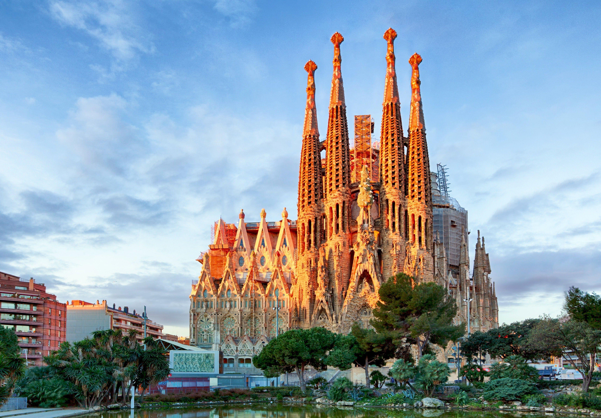
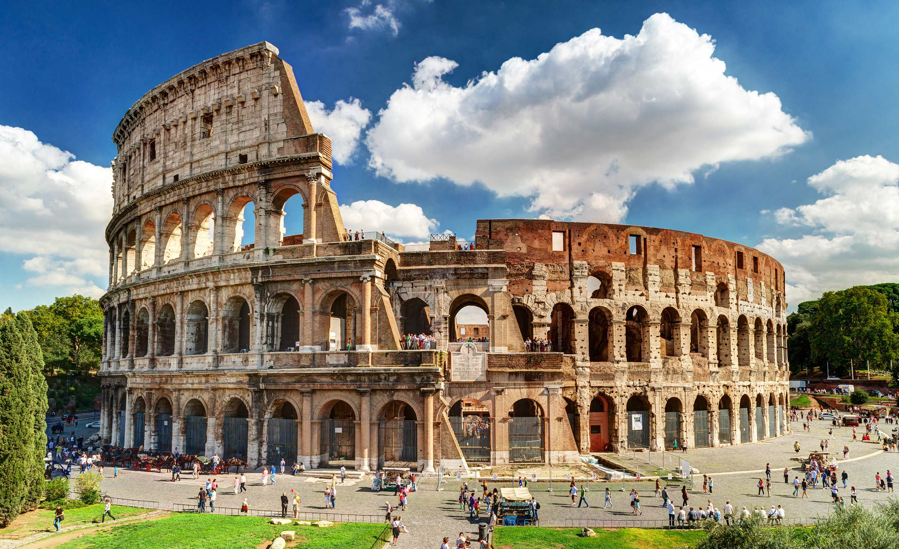

París, Francia
París es una de las ciudades más conocidas de Europa. Destaca por la Torre Eiffel, el Museo del Louvre y sus calles llenas de historia.
Descubrir ParísBienvenido a ExploraEuropa, tu guía para descubrir algunas de las ciudades más interesantes de Europa. Conoce nuevos lugares, culturas y experiencias para tu próximo viaje.
Explorar destinosDescubre tres ciudades europeas llenas de historia, cultura y lugares increíbles para visitar.
París es una de las ciudades más conocidas de Europa. Destaca por la Torre Eiffel, el Museo del Louvre y sus calles llenas de historia.
Descubrir París
Barcelona es famosa por su arquitectura, sus playas y lugares como la Sagrada Familia y el Parque Güell.
Descubrir Barcelona
Roma es una ciudad con una historia impresionante. Entre sus lugares más conocidos están el Coliseo, el Foro Romano y la Fontana di Trevi.
Descubrir RomaEuropa ofrece una gran variedad de destinos, culturas, gastronomía y monumentos históricos.
¿Ya sabes qué ciudad quieres visitar? Accede a nuestra sección de planificación y empieza a organizar tu próximo viaje.
Planificar mi viaje